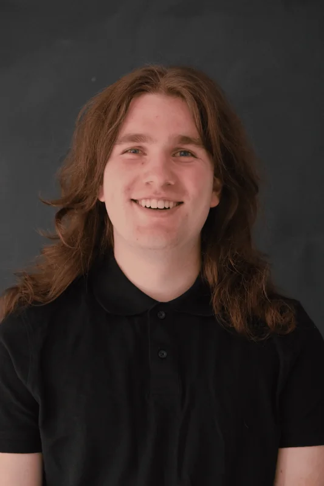

I like making the
pieces work together.
A junior back-end developer from the Netherlands, with a game development background and practical experience in business software.
How I got here
During my Game Development education, I became increasingly interested in back-end systems, APIs and solving practical problems through software. That interest grew through internships and paid development work at Xeropex, where I worked with PHP and Laravel on existing applications and internal automation projects.
I enjoy building systems that connect information, automate repetitive tasks and make complex processes easier to manage. More recently, I've explored how local AI models can be integrated into applications through explicit back-end functions.
What I'm looking for
A junior back-end role in a collaborative development team, ideally working on one or a few larger products over time. I want to contribute, learn from experienced developers and develop my understanding of software architecture, integrations and dependable business software.
I'm available for 32 hours a week. I speak Dutch and English fluently.
Experience & education
Xeropex
Internships and paid back-end development work. Internal Laravel applications, existing customer software, API integrations, database design, debugging and team development workflows.
Grafisch Lyceum Utrecht
Game Development · Mbo level 4 · Completed.
A foundation in C#, Unity, problem solving and collaborative projects.
Outside business software
I still enjoy game development and exploring how interactive systems work. Experimenting with movement, mechanics and new tools is another way for me to keep learning.

Additional background: C#, Unity and Unreal Engine Blueprints.
Let's build something useful.
I'm interested in junior back-end and software development opportunities where I can contribute to real products, learn from experienced developers and grow with a team.